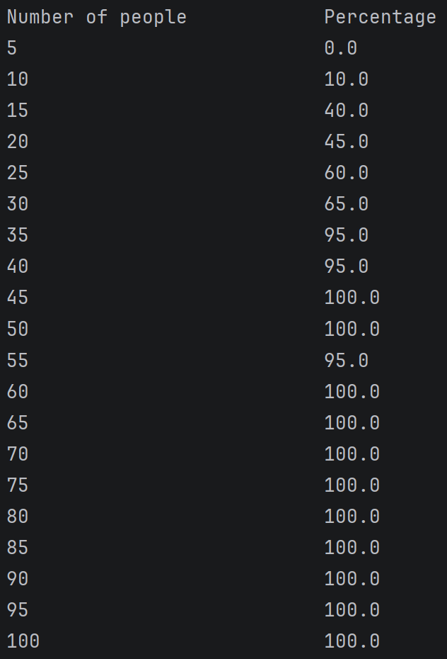
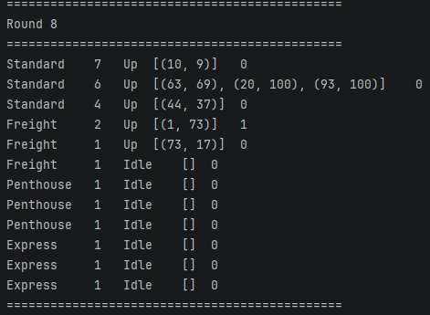

I am 21 years old, I am currently attending the University of San Diego. I grew up in Minneapolis, Minnesota, but I now live in Phoenix, Arizona.
I am in my third year majoring computer science and minoring in math. I mostly program in java and python and am currently studying more about object oriented programming and machine learning.
I like to play sports such as tennis, basketball, and volleyball, I like to go to the beach, and I like to play with my two dogs.

My and my team made this project to calculate the probability of two people in a group sharing a birthday.
This project simulates people with random birthdays in groups of different sizes, calculating how many people in that group share a birthday. It averages this percentage over multiple iterations to calculate the probability of two people sharing a birthday in various group sizes.
The design of this project involves four classes. A birthday class which represents a single person with a random birthday. A trial class that creates the birthdays and checks whether there are any duplicate birthdays in the group. A experiment class that runs a specific number of trials and calculates the percentage of those with duplicate birthdays. Finally, there is a simulator class that handles the interface and runs the experiment.
I was tasked with implementing the simulator class and reviewing pull requests from my teammates.
Working on this project, I learned more about writing clean, readable, and maintainable code. I learned more about how to implement unit tests to make sure my code does what it is intended to do. Last, I learned how to mock classes so the methods I test don't rely on external dependencies.

This project simulates a building utilizing multiple different elevator and scheduler types. Each elevator has a different use case with rules dictating when it can and cannot accept a call. Each scheduler has a different algorithm to efficiently assign calls to multiple elevators.
The goal of this project was to design a program using test-driven development and clean code principles. We wanted to create a program that was customizable with different amounts of elevators, different types of elevators, and different calls. Because we designed the program encapsulating each elevator type in a class as a child of a parent elevator class, each elevator is interchangeable without modifying the code. This same logic applies to the schedulers as well. The program allows the user to create a building with any number of floors and elevators of any type, then simulate calls that will be assigned to the various elevators using each elevator's accept conditions.
We started designing our program by creating a UML diagram. This allowed us to design each class, method, and how they are all related to one another. After this, we followed test-driven development to design methods, ensuring that they are written to pass tests, verifying they work as intended. We designed an abstract elevator class as the parent of all other elevator classes. This allowed us to ensure that each elevator child class had the correct methods that would be required to interact with an elevator. This also allowed us to reuse code that would be common across all elevator classes. We implemented a similar design with our schedulers: We created an abstract scheduler class as a parent to our different scheduler types, so that each scheduler could be used interchangeably, knowing that they had the required methods. By designing our program this way, we used all four pillars of OOP. Encapsulation by creating different classes and restricting access to classes that don't need access. Abstraction by creating abstract parent classes, defining what the classes can do, while also hiding the internal logic of how they function. Inheritance by creating concrete methods in parent classes, such as the elevator abstract class, in which the children of those class can use the methods. Finally, we used polymorphism by allowing an elevator object to take the form of any one of the elevator types we defined.
In this project, I was tasked with implementing the elevator abstract class, the freight elevator class, the penthouse elevator class, the simple scheduler class, the simulator class, along with all the corresponding test files.
While working on this project, I learned how to develop a program using test-driven development. I also learned how to work better on a team, using git, pull requests, and branching/merging. Finally, I learned how to utilize the four pillars of OOP more, separating out classes and creating parent and child classes to reuse code.
sdentz@sandiego.edu